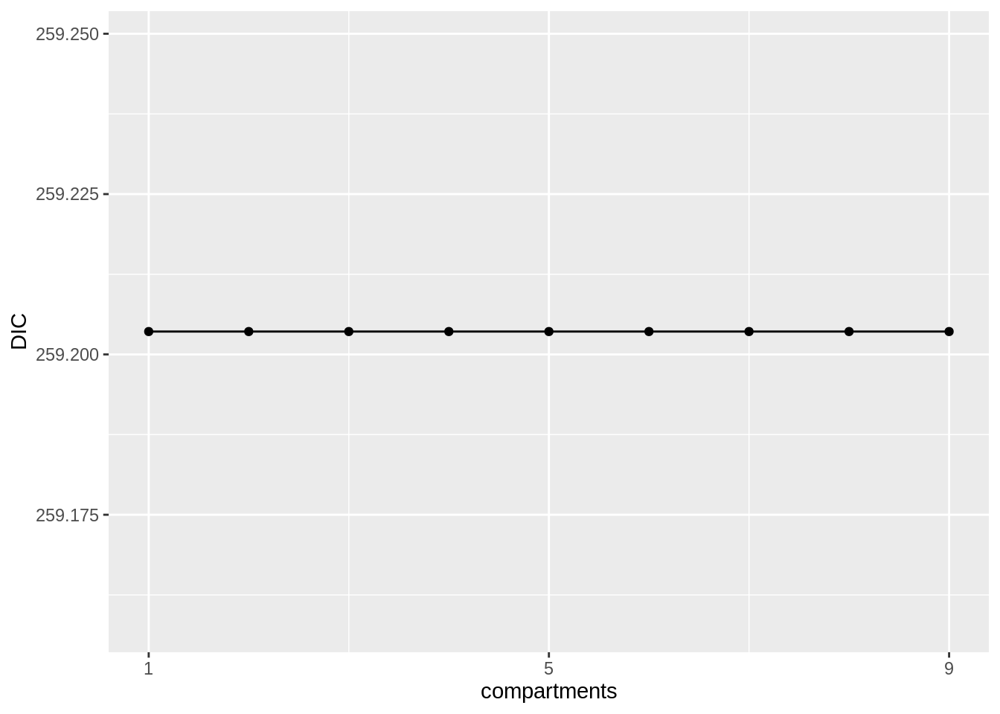
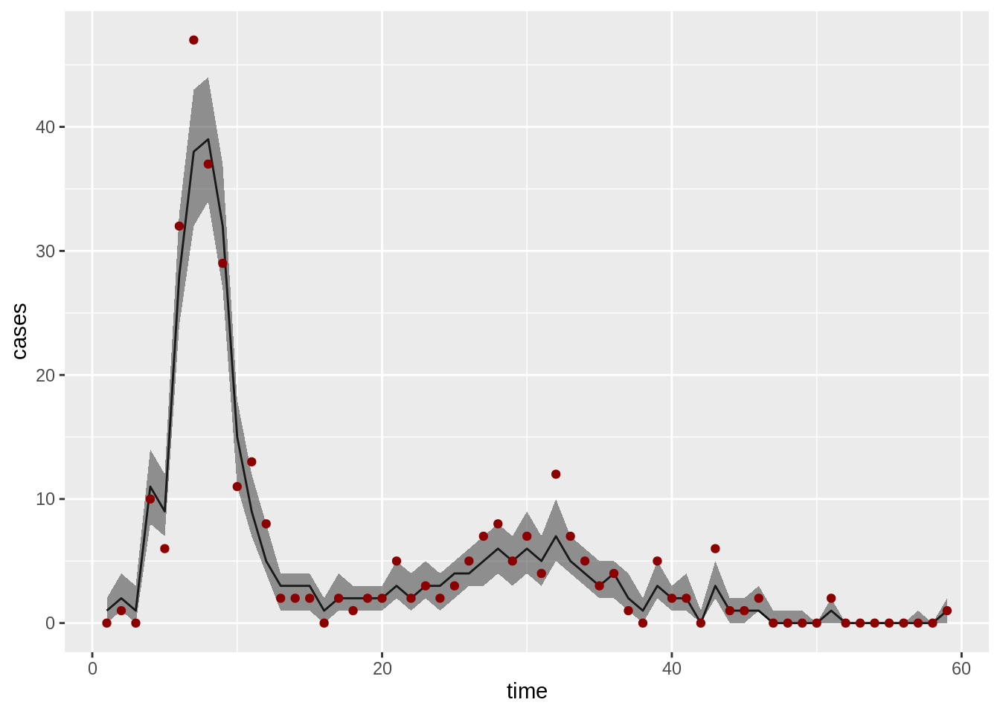

So far, we have used self-written R code and the fitR package to conduct inference. This is highly inefficient. Generally, code written in machine-compiled languages such as C or C++ can be several orders of magnitude faster. Moreover, smart parallelisation of the various steps involved, as well as other techniques that accelerate computation can have a big impact on the time needed to obtain satisfactory results.
There are numerous tools around that address this, and it is difficult to come up with a comprehensive list. A popular package is pomp, which includes multiple methods and many examples from infectious disease modelling. Here, we will look at a library called LibBi (Library for Bayesian inference). It can be used from R via the rbi package.
By far the easiest way for installing LibBi is using Homebrew (on OS X) or Linuxbrew (on linux). Once one of these is installed, issue the following command (using a command shell, i.e. Terminal or similar):
brew install libbiYou’ll also need the rbi and rbi.helpers packages:
install.packages("rbi")
install.packages("rbi.helpers")library("rbi")##
## Attaching package: 'rbi'## The following objects are masked from 'package:stats':
##
## filter, optimise, predict, simulate, update## The following object is masked from 'package:utils':
##
## fix## The following object is masked from 'package:base':
##
## samplelibrary("rbi.helpers")If you are running this on MacOS, it is probably a good idea to also run
options(libbi_args = list(openmp = FALSE))as OpenMP is not supported by the default C++ compiler that comes with MacOS.
For an introduction to the functionalities of the rbi and rbi.helpers packages, you can have a look at the RBi vignette and RBi.helpers vignette.
Models are given in LibBi using text files that follow a specific structure. You can download our LibBi implementation of the deterministic SEITL model using
seitlDeter <- bi_model(lines = readLines(
"https://sbfnk.github.io/mfiidd/bi/SEITL_deter.bi"
))Here, readLines simple reads in the text file from the web site, and bi_model prepares it to be used with the rbi package.
Look at the contents of the model file by typing
seitlDeterThis file has the following sections:
model seitlDeter { const k_erlang = 1
const N = 1000This defines two constants: the number of Erlang compartments (here: 1) and the population size (here: 1000). We can change these from within R, for example if we want more than one Erlang compartment.
dim k(k_erlang)This defines a dimension (i.e., the number of elements in a vector), that we’ll later use for the temporary immune compartments T.
state S, E, I, T[k], L, IncThis defines the model states, that is variables that change over time. Note the [k] after T, specifying that T has dimension k (that is, k_erlang compartments).
param R_0, D_lat, D_inf, alpha, D_imm, rhoThis defines the parameter, that is variables that don’t change over time.
obs CasesThis defines an observation variable, that is one that will be expected in the data passed to LibBi.
sub initial {
E <- 0
I <- 2
T[k] <- (k == 0 ? 3 : 0)
L <- 0
Inc <- 0
S <- N - I - T[0]
}This specifies the initial states of the system. Here they are fixed, but they could be drawn from distributions, too. We start with 2 infectious individuals and 3 in the first T compartment.
sub parameter {
R_0 ~ uniform(1, 50)
D_lat ~ uniform(0, 10)
D_inf ~ uniform(0, 15)
D_imm ~ uniform(0, 50)
alpha ~ uniform(0, 1)
rho ~ uniform(0, 1)
}This specifies the prior distributions. Here, they are all uniform, just in the fitmodel implementation of the SEITL model.
sub transition {This starts the transition block, that is the process model.
inline beta = R_0/D_inf
inline epsilon = 1/D_lat
inline nu = 1/D_inf
inline tau = 1/D_immThis defines a few auxiliary variables to be used later.
Inc <- 0This resets incidence (Inc) at every time step.
ode {
dS/dt = -beta * S * I/N + (1-alpha) * tau * k_erlang * T[k_erlang - 1]
dE/dt = beta * S * I/N - epsilon * E
dI/dt = epsilon * E - nu * I
dT[k]/dt =
+ (k == 0 ? nu * I : 0)
- k_erlang * tau * T[k]
+ (k > 0 ? k_erlang * tau * T[k-1] : 0)
dL/dt = alpha * k_erlang * tau * T[k_erlang - 1]
dInc/dt = epsilon * E
}This defines the system of ODEs. Note the notation for dT[k]/dt, where the ODE depends on whether k is zero or greater than zero.
sub observation {
Cases ~ poisson(rho * Inc)
}This defines the observation model. We use a observations distributed according to a Poisson distribution.
Let’s load the stochastic model using
seitlStoch <- bi_model(lines = readLines(
"https://sbfnk.github.io/mfiidd/bi/SEITL_stoch.bi"
))Again, you can look at the contents of the model file by typing
seitlStochThis is very similar to the deterministic model, but the transition block (the process model) is different:
infection ~ binomial(S, 1 - exp(-beta * I/N * timestep))
incubation ~ binomial(E, 1 - exp(-epsilon * timestep))
loss_infectiousness ~ binomial(I, 1 - exp(-nu * timestep))
immunity[k] ~ binomial(T[k], 1 - exp(-k_erlang * tau * timestep))
loss_immunity ~ binomial(immunity[k_erlang - 1], 1 - alpha)
S <- S - infection + loss_immunity
E <- E + infection - incubation
I <- I + incubation - loss_infectiousness
T[k] <- T[k] + (k == 0 ? loss_infectiousness : 0) + (k > 0 ? immunity[k - 1] : 0) - immunity[k]
L <- L + immunity[k_erlang - 1] - loss_immunity
Inc <- Inc + infectionNow, a number of random variables (defined earlier in the file as so-called noise variables) are first drawn from a binomial distribution and then used to update the model states.
We want to determine the optimal number of T compartments in the stochastic SEITL model. To do this, we run pMCMC with 128 particles and 3000 iterations (i.e., same as in the pMCMC pratical). But first, we prepare the Tristan da Cunha data set to be used as observation data set with rbi:
library("dplyr")##
## Attaching package: 'dplyr'## The following object is masked from 'package:rbi':
##
## filter## The following objects are masked from 'package:stats':
##
## filter, lag## The following objects are masked from 'package:base':
##
## intersect, setdiff, setequal, uniondata(fluTdc1971)
tdc <- list(Cases = fluTdc1971 |> dplyr::select(time, value = obs))The rbi object expects data to be given as a named list, where each element corresponds to a variable of the same name, with values given by a data frame with columns time and value. Here, the observations are called Cases, the same as in the line specifying the observation density in the LibBi file above.
Now, we can use this data set and the model to run pMCMC. First, we generate 3000 samples where we use the prior distribution as proposal distribution, to find a good starting point for the MCMC chain. We then use this to adapt the widths of the (independent truncated normal) proposals in a series of trial runs, until they yield acceptance rates between 0.1 and 0.3.
prep <- sample(seitlStoch,
nsamples = 3000, proposal = "prior", obs = tdc,
end_time = max(tdc$Cases$time), nparticles = 128
)
prep <- adapt_proposal(prep, min = 0.1, max = 0.3)We can inspect the adapted model by typing
prep$modelThis now contains a proposal_parameter block at the bottom, which contains the proposal distributions.
Next, we run 3000 pMCMC iterations for 1 to 10 Erlang compartments for T.
bi <- list()
max_erlang <- 10
for (i in 1:max_erlang) {
cat("Fitting with", i, "T compartment(s).\n")
bi[[i]] <- sample(prep,
model = fix(prep$model, k_erlang = i),
sample_obs = TRUE, nsamples = 3000
)
}## Fitting with 1 T compartment(s).
## Fitting with 2 T compartment(s).
## Fitting with 3 T compartment(s).
## Fitting with 4 T compartment(s).
## Fitting with 5 T compartment(s).
## Fitting with 6 T compartment(s).
## Fitting with 7 T compartment(s).
## Fitting with 8 T compartment(s).
## Fitting with 9 T compartment(s).
## Fitting with 10 T compartment(s).Lastly, we compute the DIC for each of these pMCMC runs.
dic <- data.frame(compartments = integer(0), DIC = numeric(0))
for (i in 1:max_erlang) {
dic <- rbind(dic, data.frame(compartments = i, DIC = DIC(bi[[i]])))
}Let’s plot the DIC as a function of the number of Erlang compartments.
library("ggplot2")
ggplot(dic, aes(x = compartments, y = DIC)) +
geom_point() +
geom_line() +
scale_y_continuous(breaks = c(1, 5, 10))
Which model fits best? You can visually inspect the fit of, for example, the SEIT2L model by plotting filtered trajectories as generated by the pMCMC algorithm
os <- summary(bi[[2]], type = "obs")
ggplot(os, aes(x = time)) +
geom_line(aes(y = Median)) +
geom_ribbon(aes(ymin = `1st Qu.`, ymax = `3rd Qu.`), alpha = 0.5) +
geom_point(aes(y = obs), fluTdc1971, color = "darkred") +
ylab("cases")
This web site and the material contained in it were originally created in support of an annual short course on Model Fitting and Inference for Infectious Disease Dynamics at the London School of Hygiene & Tropical Medicine. All material is under a MIT license. Please report any issues or suggestions for improvement on the corresponding GitHub issue tracker. We are always keen to hear about any uses of the material here, so please do get in touch using the Discussion board if you have any questions or ideas, or if you find the material here useful or use it in your own teaching.